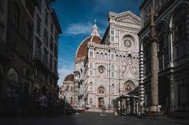
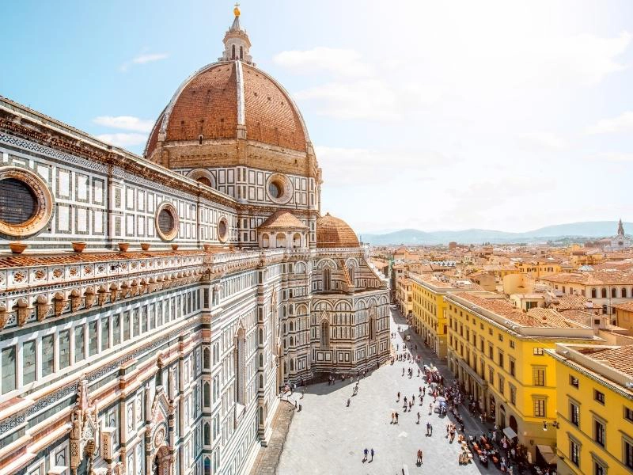
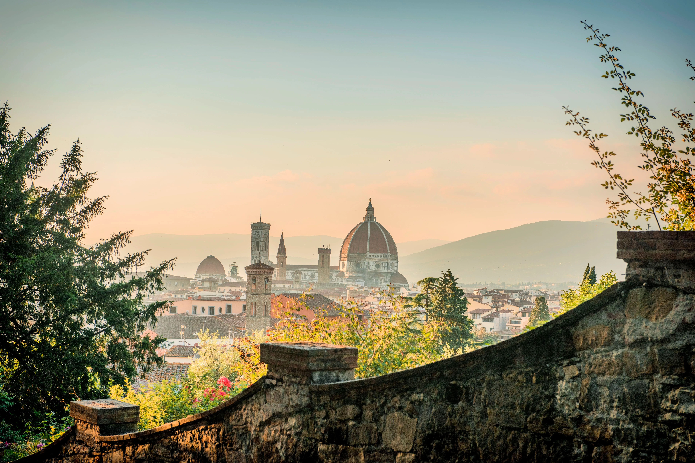
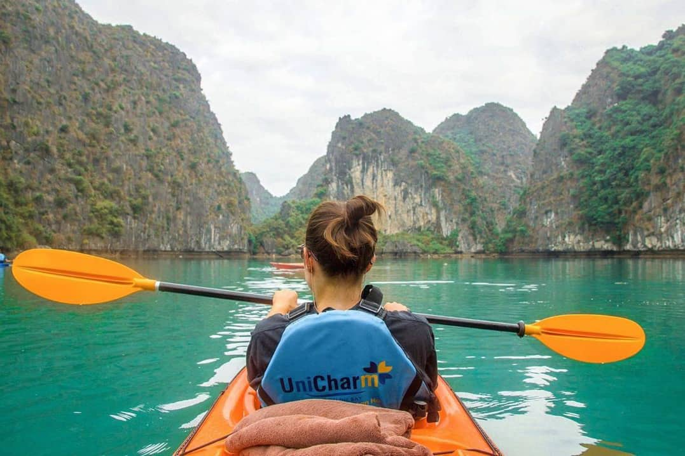

Florence, Italy, renowned for its artistic treasures and historical significance, is a city that continues to captivate travelers with its enchanting beauty. From the magnificent Florence Cathedral to the exquisite art collections housed in the Uffizi Gallery, this city offers a rich tapestry of culture and history to explore.
Nestled in the heart of Tuscany, Florence, Italy, is a city steeped in Renaissance splendor, boasting iconic landmarks like the Florence Cathedral and Michelangelo's David. Its picturesque streets, lined with quaint cafes and artisan shops, invite travelers to savor the timeless charm and artistic heritage that define this enchanting destination.
Additional Photos

A clock tower in Florence

A gorgeous building in FlorenceDaily life in the Florence streets.

Florence in the distance
Yellowstone
The time here is:
Geographical Location: North America
Yellowstone is the first national park in the United States. It covers over 2.2 million acres, and provides an opportunity to see wildlife and explore geothermal areas. In fact, Yellowstone contains about half the world's active geysers.
Mammoth Hot Springs has a number of actively forming Travertine terraces.The drive to Lamar Valley requires some dangerous roads. But the result is amazing sunset views.The multicolored layers get their hues from different species of bacteria living in the cooler water around the spring.The buffalo were so common along the roads in Yellowstone that our mantra became "If it ain't lickin the car, we aren't stopping."If you can handle the odor, the Yellowstone Sulphur Springs is a great place to hike.
Ha Long Bay, Vietnam
The time here is:
Geographical Location: Asia
Ha Long Bay is a UNESCO world heritage site and a popular tourist destination in northeast Vietnam. The bay is famous for its crystal clear emerald colored waters dotted with limestone mountains that rise up from the water. Many tourists visit and take boat tours around the islands that tend to me named after their peculiar shape. For instance, tourists can take kayak expeditions around the Teapot islets, a set of islands shaped like teapots, or be rowed around Stone Dog, which appears to be shaped like a dog.
The Ha Long Bay region is popular for scuba diving, rock climbing and hiking, particularly in mountainous Cát Bà National Park. The nearest city is Hai Phong, which is approximately 75 km away. It is easier to reach Ha Long Bay by boat because the journey from Hai Phong to Ha Long Bay can take nearly 2.5 hours.
Additonal Photos
A traditional Vietnamese sailboat sails along the Ha Long Bay. Boat tours like this one have become incredibly popular with tourists traveling to Vietnam.

Many tourists choose to rent kayaks and explore the bay on their own instead of joining a formal tour. This gives them the flexibility to explore the 1,600 islands that dot the bay on their own!
Scuba diving gives tourists the opportunity to see the bay from a very different perspective. Scuba diving allows tourists to experience the 50 species of Mollusc and over 200 unique types of fish Ha Long Bay has to offer!
Many of the 1,600 islands that dot the bay have been named for there unique shape. In fact, the series of islands that are pictured here have been dubbed the teapot islets because they resemble a teapot!
Some of the larger islands that dot Ha Long Bay actually house massive caves that are open to the public. This is an image of Sung Sot, which is the largest cave in the bay!
Prague
The time here is:
Geographic Location: Czechia
Prague is the location of several University of Michigan Study Abroad programs. Many schools such as LSA, Ross, Engineering, and School of Information send students annually to Eastern Europe to explore an international education for their desired topic.
Prague is a country in central Europe. It is the capital of Czech Republic. It has a lot of historical features and buildings. It is a beautiful city with a ton of architecture. Prague is a very popular destination spot for tourists.